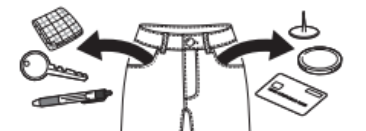
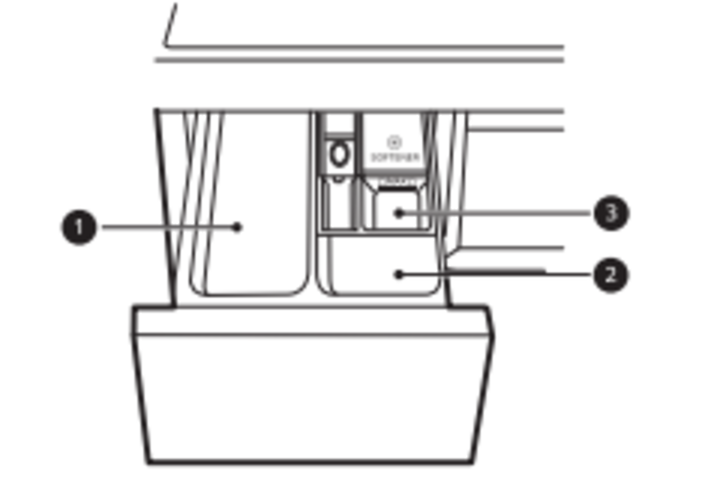
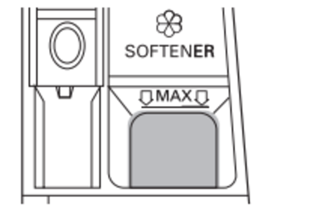

تجهيز الغسيل والمنظفات — Preparing the Wash Load
اقرأ للعميل
«عشان تاخد أحسن نتيجة غسيل، هنراجع مع بعض إزاي تفرز الهدوم، وتجهّزها، وتحط المسحوق والمنعّم صح.»
فرز الهدوم
حسب الاتساخ
افصل الهدوم المتسخة جدًا عن الخفيفة — متغسلهمش مع بعض.
حسب اللون
اغسل الغامق والملوّن لوحده بعيد عن الأبيض والفاتح — عشان اللون ميطلعش على الهدوم الفاتحة.
حسب الوبر
افصل الهدوم اللي بتطلّع وبر (زي الفوط) عن الهدوم اللي بتلمّ وبر.
علامات التيكت على الهدوم
العلامة بتقول نوع القماش وإزاي يتغسل. الشَرط اللي تحت العلامة بتوضّح نوع القماش وقد إيه يستحمل حركة الغسيل.
قبل ما تحط الهدوم في الغسالة

{{ s.n }}
{{ s.t }}
كمية المسحوق ودرج المنظفات
حمولة كاملة
حسب تعليمات الشركة
نص حمولة
½ الكمية
أقل حمولة
⅓ الكمية

١ — خانة الغسيل الأساسي: المسحوق، ومنعّم المية، ومزيل البقع.
٢ — خانة الغسيل المبدئي (Pre Wash).
٣ — خانة المنعّم السائل.
اقفل الدرج بالراحة قبل التشغيل — لو اتقفل جامد المسحوق ممكن يدخل خانة تانية أو ينزل الحلة بدري.
{{ s.n }}
{{ s.t }}
المنعّم والأقراص ومنعّم المية

خانة المنعّم بتنزل المنعّم لوحدها في آخر شطفة. متعدّيش علامة MAX — لو زاد، هينزل بدري ويعمل بقع على الهدوم.
ممنوع
• تحط المنعّم على الهدوم مباشرة في الحلة — بيعمل بقع غامقة صعب تتشال.
• تسيب المنعّم في الدرج أكتر من يوم — ممكن يتجمد. ولو تقيل خفّفه بمية.
• تفتح الدرج والمية بتنزل أثناء الغسيل.
• تستخدم مذيبات (زي البنزين).
التابلت (أقراص المنظفات)
١ — افتح الباب وحط التابلت في الحلة قبل الهدوم.
٢ — حط الهدوم واقفل الباب.
متحطش التابلت في درج المنظفات.
منعّم المية (ملح الليمون)
بيتستخدم بس لو المية عند العميل عسرة ومش قادر يركّب فلتر مية — بيقلل الجير وكمية المسحوق. حط المسحوق الأول وبعدين ملح الليمون، بالكمية المكتوبة على العبوة.
انصح العميل إن تركيب فلتر مية أفضل — عشان الهدوم متتلفش ومتتجيّرش من الاستخدام الزيادة لملح الليمون.
Created by ICC QA & Training Team